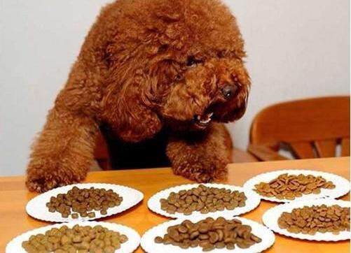

给幼犬建立起好的习惯
“为什么我满心欢喜抱回家的小狗狗有这么多让人头痛的坏毛病，这些毛病该怎么改？”这是我被一些新手主人咨询最多的问题。当满腔的热爱转化为无止境的吠叫、毫无征兆的大小便和胡乱的啃咬家具，预想中乖巧可爱的萌宠变身小恶魔，他们便会失望而无力地向我诉苦。的确，对于没接触过专业训练知识的新手主人来说，这些确实是令人头痛的问题。但也恰恰因为这些家庭新成员还处于幼儿时期，这一时期的行为习惯将影响甚至改变狗狗一生。狗狗的幼犬时期就像一张白纸，之后的图案是由主人涂鸦填补的，如果主人能够给幼犬建立起好的习惯，那接下来的数十年你们都将以此为基础更加和谐美满的相伴。反之，那这些现在看来还不算太严重的问题在狗狗成年后将暴露的更加彻底，也更加难处理告诉狗狗什么是正确的
有的人煞有其事的强调处罚的时间点，认为只要处罚及时就可以。比如幼犬随地大小便，他认为只要抓住它正在犯错的当下处罚它，它就会明白。很可惜这又是一次人类逻辑推测的一厢情愿，狗狗在尿尿的那一刻受到处罚，它建立的直接联系是尿尿和主人，它会想：我以后都不能再主人面前尿尿了，因为他会凶我，这可能导致它以后背着你偷偷尿在你看不见的地方，让你连处罚的机会都没有。即使我们退一步说，假设它明白了不能在这里上厕所了，可是重点是它明白它该在什么地方上厕所了吗？这就像把一个人关到一个没有厕所的房间里一直住下去，恐怕他最终也会抛弃人类已经形成的如厕习惯而 “犯错” 吧。所以很多事情并不是狗不想做对，或是蓄意挑衅你，只是它根本不明白该如何做对，甚至不明白什么才是对的，因为主人从来就没有划定过 “对” 的界限，主人往往无意识地隐藏着那块 “对” 的区域。
这也就是我说的第一个原则——告诉狗狗什么是正确的。不要再隐藏了主人们，去告诉你的宝贝什么是对的吧。这当你看到它开始嗅闻地面不停的绕圈（小便前的征兆）时，温柔地把它抱起来，放到您认为对的地方，然后轻轻的温柔的鼓励它，在它做对的时候高兴的夸奖它，然后给它一些它爱的食物，几次之后你就会发现它上完厕所后会兴冲冲的来找你好像在跟你说：看啊，我做对了，我是不是该有点奖励啊。现在你跟狗狗都高兴了，这难道不是一个最好的结果吗？
做好环境管理
什么是环境管理？听起来很专业的术语，其实道理很简单，简单到你忘记用了——拿开你的肉别放在桌子上。对，这就是做好环境管理，它能预防可能发生的错误，防患于未然。想一想如果你家中有一个2岁的婴儿，你可能会把你觉得对婴儿有危险的东西（比如电源线、药丸）放到他接触不到的地方。同样的，对幼犬也是一样的道理，把你不希望它接触的东西（比如鞋子、食物）整理归纳好放在它接触不到的地方，让它根本没有犯错误的机会，自然也就无需解决错误了。环境管理同样可以应用的很广泛，比如如果你不希望幼犬养成上床或者沙发的习惯，那么当你离开家时就可以将狗狗的活动区域进行限制，不让它接触到床与沙发，当它没有错误的选择时，它哪还能去犯什么错？
环境管理七项注意:
1、垃圾桶的管理，养狗的家庭需要能很安全地盖上的垃圾桶;
2、袜子的管理，袜子还有那些小件衣物一定要收到狗翻不着的地方，穿过的也不能随便乱扔;
3、窗户的管理，离开家的时候，最好把百叶窗、窗帘什么的收起来，让狗够不着；
4、食物的管理，把食物都锁到柜子里去，让狗闻得到够不着；
5、药物的管理，家里的各种药一定要收到医药箱里，放在狗碰不着的地方；
6、缓解焦虑，主人把狗单独留在家里的话，狗容易焦虑，会用挠或者啃东西的方式来减轻焦虑稳定情绪。所以被单独关家里的狗常常会把抱枕扯破，把鞋子叼得到处都是；
7、绳索的管理，线绳，橡皮筋或者其他类似的东西，都别让狗碰。；
食物搭配科学

犬最好的食物是狗粮，如不能给它吃狗粮而吃家制食物时，要注意搭配保证营养均衡。这样狗狗饲养才会健康。动物内脏（注意：不要长期喂食猪肝，会中毒），肉类，玉米粉，鱼肉（注意：鱼的硬刺可能会卡住，最好挑去），胡萝卜等，都可以是犬的食品，几乎不放盐煮熟后喂食。另，喂食幼犬狗粮时需和拌少许温水。这对狗狗成长很重要。
蔬菜类深色绿叶蔬菜、黄色或橘色蔬菜：一天3～5份。水果类柑橘类水果、番茄或其他含丰富维生素C的水果：一天2-4份。一份相当于1个中等大小的水果或6盎司新鲜果汁。乳制品类牛奶、奶酪、酸奶及其他奶制品：一天2-3份。一份相当于一杯酸奶或牛奶或1盎司乳酪。肉类牛肉、仔牛肉、猪肉、羊肉、鱼肉、鸡肉、动物肝脏、蛋类、肉类代用食品：一天2-3份。一份相当于3-4盎司动物蛋白、一般也就大致相当于一副纸牌那么大，或1/4杯坚果。脂肪、油、糖尽量节制使用。